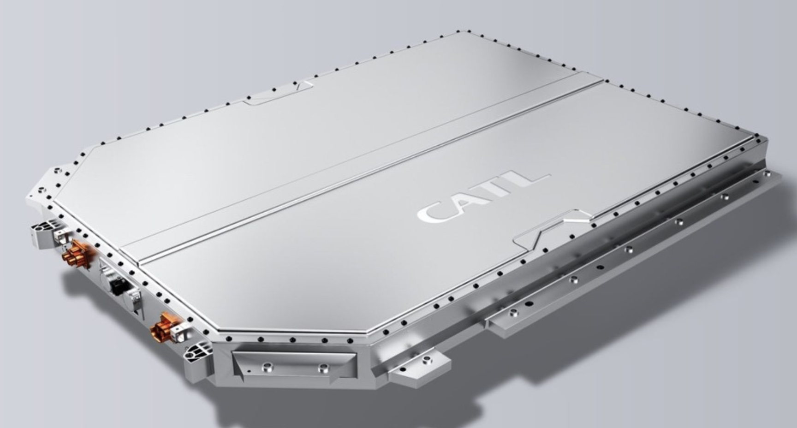

电池能量计算器
输入电压和容量，估算储存能量。
电池把材料科学、电化学、安全工程和能源系统连在一起。它不是一个“装电的盒子”，而是现代交通、电子设备和可再生能源背后的基础设施。

点击每一层，了解它负责什么、为什么重要、工程难点在哪里，以及常见材料是什么。
有些体系追求高能量密度，有些追求安全寿命，有些追求成本和资源稳定。点击卡片查看完整知识页。
范围是教育用途的典型估计，真实数值取决于设计、供应商和测试条件。
同样叫“锂电池”，内部材料、离子通道、热管理和封装方式可能完全不同。下面这几组概念，是读懂电池新闻和技术路线的入口。
最多选择 4 种技术。雷达图显示相对评分，柱状图显示典型能量密度中值。所有分数都是简化学习模型，不是工业规格。
电芯只是起点。模组、电池包、BMS、热管理和整车能耗共同决定真实续航、安全和寿命。

两个小工具帮助你快速理解 Wh、kWh、能耗和温度折减之间的关系。
输入电压和容量，估算储存能量。
输入电池容量、能耗和温度模式，估算续航。
材料库不是简单罗列名词，而是解释每种材料在电池中的角色、优势、挑战和应用位置。
这部分保留学生项目的真实感：不是把资料复制成百科，而是记录我如何理解材料、热管理和系统工程之间的联系。

答题后会看到解释。目标不是考倒你，而是确认关键概念真的连起来了。